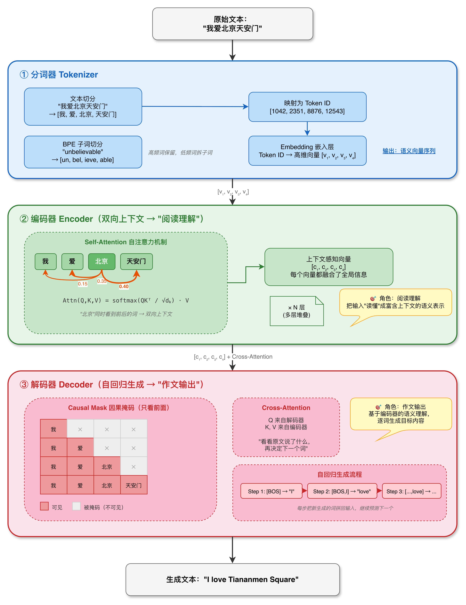
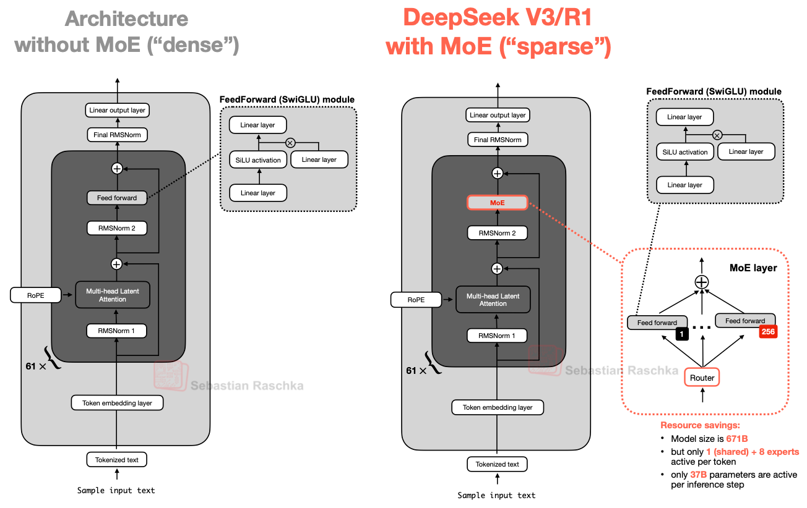
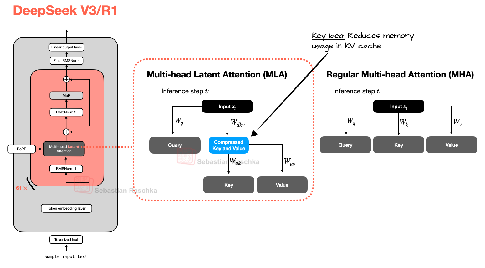

用最短的路径，把从机器学习到大模型之间的演化线串起来，看清当下模型长什么样，再搭一套自己的学习工作流。
很多人觉得机器学习到大模型之间的东西又多又杂，但其实它们之间有一条非常清晰的进化逻辑 — 每一个新东西的出现，都是为了补上一个东西的短板。理解这条因果链，后面再出现什么新架构，你都能快速定位它在"补谁的短板"。
这三个东西本质上都是"用一条线（或一个面）去拟合数据"，区别只在于你要拟合什么、怎么拟合。它们共同奠定了后续所有模型的两大基石：用参数（$w, b$）去"学习"数据中的规律，以及用损失函数 + 梯度下降来优化参数。
既然单层感知机搞不定非线性问题，那叠起来呢？答案是可以。多层感知机（MLP）在输入层和输出层之间加入了隐藏层，每一层的输出作为下一层的输入：
这里的 $\sigma$ 不再是阶跃函数，而是 Sigmoid、Tanh 这类可导的激活函数。为什么一定要可导？因为接下来要请出深度学习的核心武器 — 反向传播算法（Backpropagation）。
MLP 虽然解决了非线性问题，但在很长一段时间里仍然被传统机器学习算法（SVM、随机森林等）压制，直到三个关键事件改变了格局：
从 MLP 到大模型，中间还差一个关键桥梁 — 如何让模型处理"序列"。这就是接下来分词器、编码器、解码器要解决的问题。

模型不认识中文、英文，它只认识数字。分词器的工作就是把文本拆成"子词单元"（Token），每个单元对应一个整数 ID。BPE（Byte Pair Encoding）是当前最主流的分词算法，它的思想极其简单：初始时把每个字符当作一个 Token → 统计所有相邻 Token 对的出现频率 → 把出现最多的那对合并成一个新 Token → 重复直到词汇表达到预设大小。
| 分词方法 | 核心思路 | 代表算法 | 优缺点 |
|---|---|---|---|
| 基于词 | 按空格/标点切分 | 朴素分词 | 遇到生僻词就废了，只能标 UNK |
| 基于字符 | 每个字符一个 Token | Char-level | 词汇表极小，但序列太长，语义信息稀疏 |
| 基于子词 ✦ | 常用词保留，生僻词拆成子词 | BPE、WordPiece、SentencePiece | 当前主流，平衡了词汇表大小和覆盖度 |
编码器的使命是把一串 Token 变成一组富含上下文信息的向量。关键在于"上下文"三个字 — 在 Transformer 的编码器中，每个 Token 的向量不是孤立的，而是"看过"了整句话所有其他 Token 之后才生成的。这背后的核心机制是 Self-Attention（自注意力）：
简单来说，对于句子里的每个词，Self-Attention 会计算它和句子里所有其他词的"相关度"（通过 $Q$ 和 $K$ 的点积），然后按照相关度加权汇总所有词的信息（$V$），形成这个词的"上下文感知表示"。比如句子"我爱北京天安门"中，当编码器处理"北京"这个词时，它会同时看到前面的"我爱"和后面的"天安门"，因此它生成的向量既知道"北京"本身的意思，也融入了上下文信息。
解码器和编码器有一个核心区别：它是自回归的（Autoregressive） — 每生成一个 Token，就把它加入到已有序列中，然后基于整个已有序列来生成下一个 Token。为了实现这一点，解码器使用了 Causal Mask（因果掩码） — 在计算注意力时，每个位置只能"看到"它前面的 Token，看不到后面的。毕竟，你不可能在写作文的时候参考你还没写出来的内容。
解码器还会用 Cross-Attention 去"查看"编码器的输出，从而知道"原文说了什么"，然后据此生成目标文本。这三个模块的组合方式，直接决定了后续大模型的两大流派。
2017 年，Google 发表了 《Attention Is All You Need》，提出了 Transformer 架构，它同时包含编码器和解码器，最初是为机器翻译设计的。但随后的两年里，学术界迅速"分家"了：有人只拿编码器，有人只拿解码器，走出了两条完全不同的路。
从今天的视角回头看，GPT 路线胜出有几个关键原因：
如果说第一章是"回顾历史"，这一章就是"看看现在"。我们以 DeepSeek 的迭代为主线，看一个大模型从 V3 到 V4 到底经历了哪些架构进化，再拉高视角看看 2025-2026 年间 LLM 领域的整体变化趋势。
DeepSeek-V3 发布于 2024 年 12 月，它代表了"上一代大模型"的巅峰架构。理解 V3，是理解后续所有进化的基础。它是一个 MoE（Mixture of Experts，混合专家）模型：
传统的 Dense 模型每个 Token 都会经过所有参数。而 MoE 模型把每一层的前馈层（FFN）替换成了多个"专家"（Experts），用一个路由器（Router）来决定每个 Token 交给哪几个专家处理。这个设计极大地降低了推理成本 — 你不需要每次都让所有 671B 参数参与计算，只需要让"最懂当前问题"的 37B 参数出来干活。

DeepSeek-V3 用的是 DeepSeekMoE 架构，有两个关键改进：细粒度专家（256 个路由专家 + 1 个共享专家，路由粒度更细）和辅助损失平衡（防止所有 Token 都涌向少数热门专家，引入辅助损失均衡负载）。

这是 DeepSeek-V3 的另一个标志性创新。传统的 Multi-Head Attention（MHA）需要为每个注意力头存储独立的 Key 和 Value 向量，在推理时会占用大量 KV Cache 内存。MLA 的思路是：把 K 和 V 压缩到低维的潜在向量（Latent Vector），推理时再解压：
这使得 KV Cache 的大小从 $O(n \cdot h \cdot d)$ 降低到 $O(n \cdot c)$，其中 $c \ll h \cdot d$。在 DeepSeek-V3 中，这个压缩比大约能让 KV Cache 缩小 5–13 倍，对长文本推理至关重要。
DeepSeek-V3 的训练分为三个阶段，这也是当时主流大模型的标准范式：
从 DeepSeek-V3 发布到现在（2026 年中旬），大模型架构经历了密集的迭代。以 DeepSeek 进化为主轴，穿插其他模型的关键变化：
| 创新 | 机制 | 效果 |
|---|---|---|
| CSA + HCA 混合注意力 |
CSA（压缩稀疏注意力）：把小段 Token 压缩成摘要表示，后续 Token 只关注最相关的 Top-K 个摘要，实现"精准但高效"的局部关注。HCA（重度压缩注意力）：把大段 Token（每 128 个压缩为 1 个表示）极度压缩，提供"廉价但全局"的宏观视野。两者交替使用。 | 推理算力仅 V3.2 的 27% KV Cache 仅 10% |
| mHC 流形约束超连接 |
传统 Transformer 用一条"残差流"在层间传递信息。V4 把它替换为多条并行的残差流，并施加双随机数学约束来保证信息在各流之间的稳定重分配。 | 超深网络信息流动 更高效稳定 |
| 原生 1M 上下文 | CSA + HCA 交替使用，支撑百万 Token 窗口 | 代码仓库分析、多文档推理、Agent 记忆 |
| 创新点 | 代表模型 | 核心思路 |
|---|---|---|
| 极端稀疏 MoE | ZAYA1 | 每个 Token 只激活 1 个路由专家 |
| 跨层 KV 共享 | Gemma | 多个解码层复用同一层的 K/V，降低内存 |
| Per-Layer Embeddings | Gemma | 每层独立的 Token 嵌入，低成本增加模型容量 |
| 层级注意力预算 | Laguna | 不同层分配不同数量的注意力头，动态调整计算量 |
| 压缩卷积注意力 | ZAYA1 | 在压缩的潜在空间中直接做注意力 + 卷积混合 |
在 AI 时代，信息鱼龙混杂，想看优质干货又需要花时间搜集、检索和筛选。随着时间累积，每当新技术出现，我们总要重新追踪、挖掘和筛选，信息差不断拉大，最后疲于"技术奔命"。核心思路四个字：开源节流。与其被动追赶每一篇推文、每一个热点，不如主动搭建一套适合自己的信息过滤和知识沉淀体系。
开拓自己的一套信息源在这个时代极为重要。不同维度的信息源各有侧重，下面分享我自用的不同维度信息源：
御三家：机器之心、量子位、新智元 — 标题党居多，机器之心相对好一些。NLP 方向推荐 JioNLP、刘聪NLP，有一些自然语言处理的技术贴。
为了降低自己的学习成本、提升学习效率，使用 AI 来替代学习前期的部分工作是十分推荐的选择。我目前对文章和仓库的挖掘主要依赖两个自建工具：自建 Agent 工作流 Ascan 和 自建 Learn-art Skill。
| 挖掘方向 | 权重 | 举例关键词 |
|---|---|---|
| 智能体框架 / MCP | 2.0 | llm-agent, tool calling, MCP |
| 数字员工 / 虚拟人 | 1.8 | digital avatar, talking head, NeRF |
| 意图理解 / 用户行为 | 1.6 | intent classification, user behavior |
| 商品推荐 | 1.5 | recommendation, click-through rate |
| 电商客服 / 对话系统 | 1.4 | dialogue system, customer service |
| 商品巡检 / 合规检测 | 1.3 | anomaly detection, defect detection |
核心特性：自定义挖掘主题与数量 · 定时自主运行 · HTML/MD 输出与预览 · 接入钉钉文档 · arXiv/GitHub 官方源
仓库分析策略：
论文分析策略：
回过头看这篇文档的三章，其实对应的是三个递进的问题：
标题叫"从 0.5 到 1"，而不是"从 0 到 1"。因为在 AI 这个领域，没有人真正从 0 开始，大家多少都有一些直觉和碎片化的认知。这篇文档想做的，就是帮你把那些散落的 0.5 拼成一个相对完整的 1，让你在面对下一篇论文、下一个新模型时，有一个可以挂靠的知识骨架。
AI 时代最不缺的就是信息，最缺的是把信息变成自己认知的能力。
至于 1 到 10 的部分，交给时间去迭代。共勉。